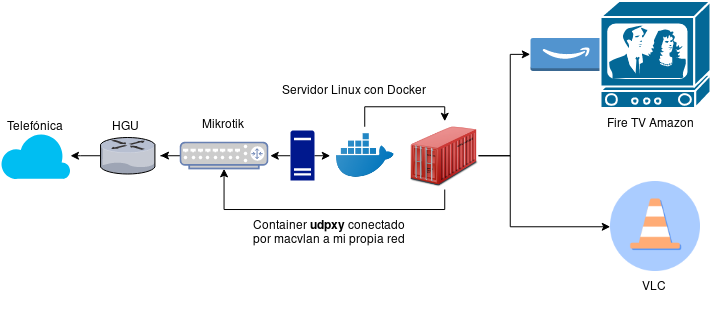

Una de las ventajas que nos aporta Movistar (respecto a la gran mayoría de operadores nacionales) es que nos da opción a usar nuestro propio router, cosa que se agradece bastante. Al final todo es tan simple como poner el modo monopuesto y conectar con PPPoE desde nuestro propio equipo y ya estaría. Pero… ¿Y si queremos ver la tele desde el PC u otro dispositivo que no sea el deco de Movistar?.
Tenemos varias formas de hacerlo:
Hasta hace poco lo tenía montado todo de tal manera (ya no estoy en Movistar, demasiadas subidas de precio) :

Básicamente lo que hago es usar un HGU en modo monopuesto con un Mikrotik, éste dispone de IGMP Proxy, por tanto, al activarlo se puede acceder al grupo multicast de la TV de Movistar sin necesidad de udpxy, ejemplo : cualquier canal de esta lista. ¿Si así va bien por qué usas udpxy?, pues por una sencilla razón, el IGMP Proxy solo me permite una conexión, y la gracia es poder hacer unas cuantas. Udpxy además de pasar de multicast a unicast, te permite tener varias conexiones a la vez, cosa que está muy bien. En mi caso usaba un Fire TV Stick de Amazon con Smart IPTV, y luego en el resto de la casa se podía ver la televisión con VLC sin ningún tipo de problema.
Compose udpxy :
version: '2'
services:
udpxy:
image: dorftv/udpxy
ports:
- "4022:4022"
tty: true
restart: always
networks:
udpxy:
ipv4_address: 192.168.15.121
networks:
udpxy:
driver: macvlan
driver_opts:
parent: eno1
macvlan_mode: bridge
ipam:
config:
- subnet: 192.168.15.0/24
Parte de la lista :
#EXTINF:-1,tvg-id="LA1.es",[001] La 1 HD
http://192.168.15.121:4022/rtp/239.0.0.185:8208
#EXTINF:-1,tvg-id="LA2.es",[002] La 2 HD
http://192.168.15.121:4022/rtp/239.0.0.183:8208
#EXTINF:-1,tvg-id="Antena3.sp",[003] Antena 3 HD
http://192.168.15.121:4022/rtp/239.0.0.186:8208
#EXTINF:-1,tvg-id="Cuatro.sp",[004] Cuatro HD
http://192.168.15.121:4022/rtp/239.0.0.177:8208
#EXTINF:-1,tvg-id="Telecinco.sp",[005] Tele 5 HD
http://192.168.15.121:4022/rtp/239.0.0.176:8208
#EXTINF:-1,tvg-id="LaSexta.sp",[006] La Sexta HD
http://192.168.15.121:4022/rtp/239.0.0.187:8208
Por aquí dejo los enlaces para activar IGMP Proxy en los routers que lo he probado y que tengo certeza de que funcionan correctamente :
Al principio tuve problemas con IGMP Proxy en Mikrotik, la televisión se veía pero se iba cortando hasta que al final dejaba de verse, o saltaba de canal. Así que finalmente llegué a la conclusión de que no estaba gestionando bien el tráfico UDP ni IGMP. Estas reglas me funcionaron, pero no me dio tiempo a dejar una versión definitiva de ellas. Probablemente sobre alguna de ellas.
/ip firewall filter add action=accept chain=input comment="igmp" protocol=igmp
/ip firewall filter add action=accept chain=output protocol=igmp
/ip firewall filter add action=accept chain=input comment="upd imagenio" protocol=udp
/ip firewall filter add action=accept chain=forward protocol=udp
OJO, se han de posicionar bien las reglas!!
{kind=link}